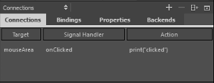
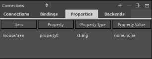
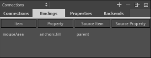

Adding Connections
You can use the Connections view to:
- Connect objects to signals.
- Specify dynamic properties for objects.
- Create bindings between the properties of two objects.
- Manage backend QObjects.
For examples of adding connections, see Creating Scalable Buttons and Borders.
Connecting Objects to Signals
To connect objects to signals in QML, create Connections objects.

To create the connections:
- Select the Connections tab.
- Select the
 (Add) button to add a connection.
(Add) button to add a connection. - Select Target to add the object to connect to a signal.
- Select Signal Handler to select the signal that the connection will listen to from a list of all signals available for the object.
- Select Actions to specify the action to perform when the signal is emitted. You use JavaScript to specify the actions.
Specifying Dynamic Properties
You can bind Properties to dynamic expressions to define global properties for an object that can be read by other objects. For example, you can specify global properties for the root object that you can use in the child objects.

To specify dynamic properties for an object:
- Select the Properties tab.
- Select Item to select the object to specify the property for.
- Select Property to give a name to the property.
- Select Property Type to specify the type of the property.
- Select Property Value to specify the value of the property.
Adding Bindings Between Properties
To dynamically change the behavior of an object, you can create a Property Binding between the properties of two objects.

To bind a property of an object to the property of another object:
- Select the Bindings tab.
- Select the (Add) button to add a binding.
- Select Item to select the target object whose property you want to change dynamically.
- Select Property to select the property to bind to a source property.
- Select Source Item to select the object whose property you want to use to determine the behavior of the target object.
- Select Source Property to select the property to bind the target property to.
Managing C++ Backend Objects
Many applications provide QObject objects implemented in C++ that work as a bridge between QML and C++. Such objects are typically registered with qmlRegisterType or qmlRegisterSingletonType and then used by QML to communicate with the C++ backend. Another example of such objects are the state machines created by the Qt SCXML Compiler.
Backend objects in a QML file are accessible if the QML file contains the required imports. In addition, for a non-singleton QObject, a dynamic property that contains the QObject must be specified.
A local QObject is instantiated in the current .qml file, as follows:
property MyType myType: MyType {}.
Otherwise the property is just defined, as follows:
property MyType myType
To manage backend objects:
- Select the Backends tab to view accessible backend objects.
- Select the (Add) button to add a backend object in the Add New C++ Backend dialog.
- In the Type field, select the type of the backend QObject to add.
- Select the Define object locally check box if the QObject is not registered as a singleton.
- Select OK to add the required import and to create the property for a non-singleton object.